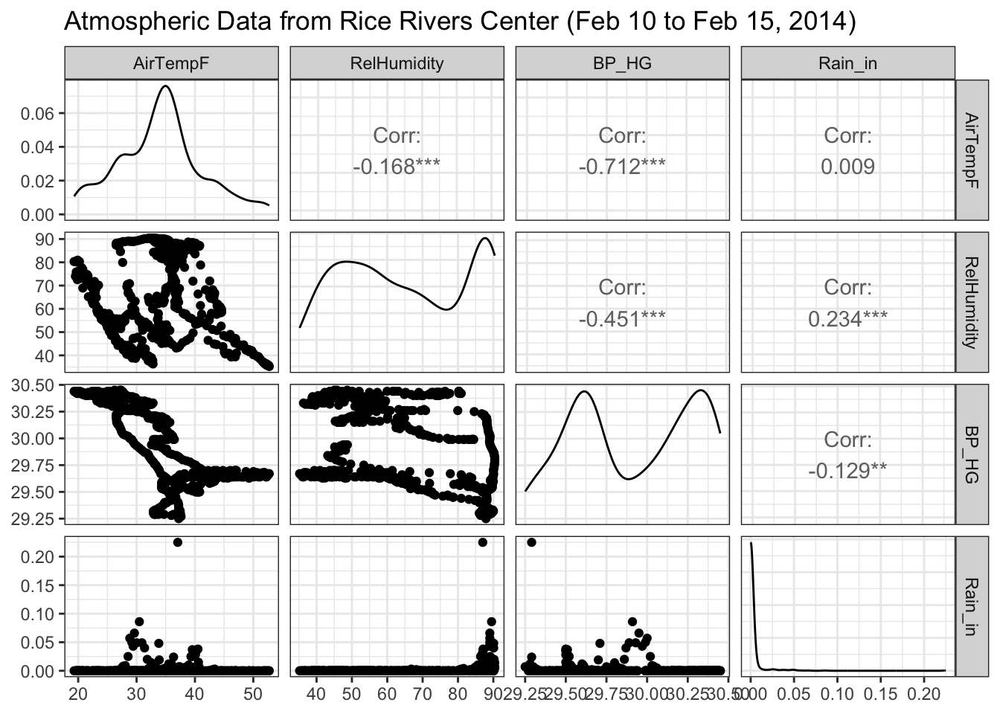
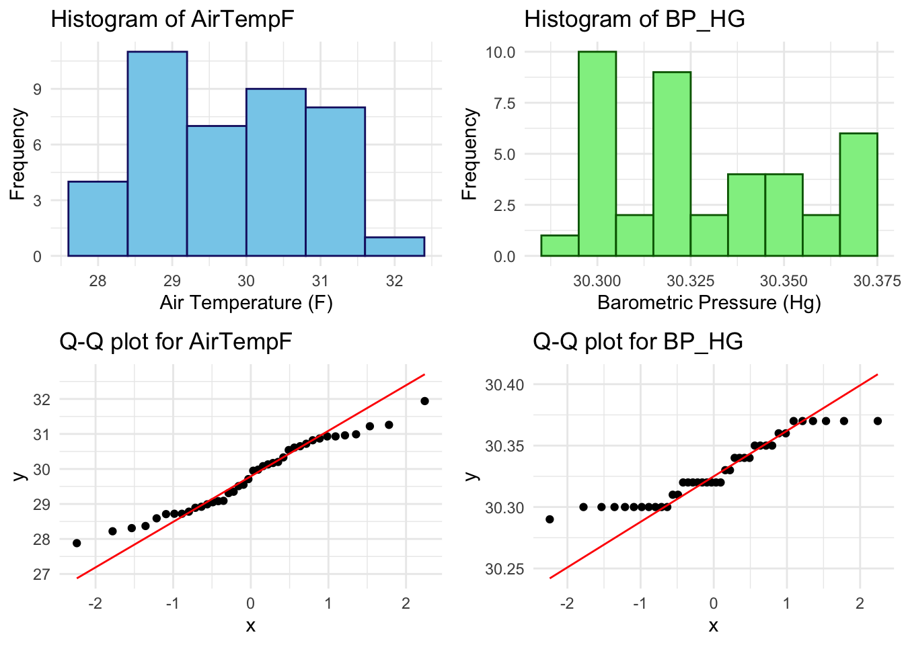
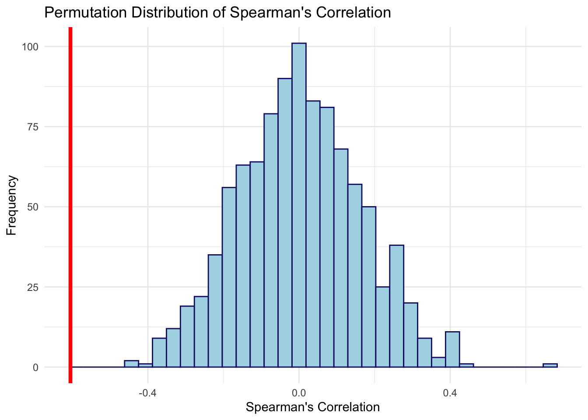

# Load Required Packages
library(ggplot2)
library(dplyr)
library(GGally)
library(lubridate)
library(readr)
library(gridExtra)
#Load data
url <- "https://docs.google.com/spreadsheets/d/1Mk1YGH9LqjF7drJE-td1G_JkdADOU0eMlrP01WFBT8s/pub?gid=0&single=true&output=csv"
read_csv(url) -> rice
rice$DateTime <- as.POSIXct(rice$DateTime, format= "%m/%d/%Y %I:%M:%S %p")- Look up the library GGally; it has a function named ggpairs(). Use that function to plot the atmospheric data from the Rice Rivers Center for the samples collected from 10 February to 15 February.
# Filter the data for the specific date range
filtered_data <- rice %>%
filter(month(DateTime) == 2 & day(DateTime) >= 10 & day(DateTime) <= 15) %>%
select(AirTempF, RelHumidity, BP_HG, Rain_in)
# Plot the pairs plot
ggpairs(filtered_data) +
theme_bw() +
ggtitle("Atmospheric Data from Rice Rivers Center (Feb 10 to Feb 15, 2014)")
- For those atmospheric data, which pair of variables has the strongest correlation? What is the 95% confidence interval on that correlation coefficient?
# Compute the correlation matrix
cor_matrix <- filtered_data %>%
select(AirTempF, RelHumidity, BP_HG, Rain_in) %>%
cor()
# Set the lower triangle (including diagonal) to NA to avoid duplicate pairs
cor_matrix[lower.tri(cor_matrix, diag = TRUE)] <- NA
# Find the index of the maximum correlation value (excluding the lower triangle)
max_corr_value <- max(abs(cor_matrix), na.rm = TRUE)
strongest_pair_index <- which(abs(cor_matrix) == max_corr_value, arr.ind = TRUE)
# Ensure that there is at least one pair found
if (length(strongest_pair_index) > 0) {
# Extract the variable names for the strongest correlation
strongest_var1 <- colnames(cor_matrix)[strongest_pair_index[1, 1]]
strongest_var2 <- colnames(cor_matrix)[strongest_pair_index[1, 2]]
# Get the correlation value between these two variables
strongest_corr_value <- cor_matrix[strongest_pair_index[1, 1], strongest_pair_index[1, 2]]
# Print the pair and the correlation coefficient
cat("Strongest correlation is between", strongest_var1, "and", strongest_var2,
"with a correlation of", round(strongest_corr_value, 3), "\n")
# Calculate the 95% confidence interval for the correlation coefficient
# Fisher's z transformation
z_value <- 0.5 * log((1 + strongest_corr_value) / (1 - strongest_corr_value))
# Standard error of z
n <- nrow(filtered_data) # Sample size
se_z <- 1 / sqrt(n - 3)
# Confidence interval for z
z_ci_lower <- z_value - 1.96 * se_z
z_ci_upper <- z_value + 1.96 * se_z
# Transform back from Fisher's z to get the confidence interval for the correlation coefficient
corr_ci_lower <- (exp(2 * z_ci_lower) - 1) / (exp(2 * z_ci_lower) + 1)
corr_ci_upper <- (exp(2 * z_ci_upper) - 1) / (exp(2 * z_ci_upper) + 1)
# Print the confidence interval
cat("The 95% confidence interval for the correlation coefficient between", strongest_var1, "and", strongest_var2,
"is (", round(corr_ci_lower, 3), ",", round(corr_ci_upper, 3), ")\n")
} else {
cat("No valid correlations found.\n")
}Strongest correlation is between AirTempF and BP_HG with a correlation of -0.712
The 95% confidence interval for the correlation coefficient between AirTempF and BP_HG is ( -0.75 , -0.669 )- Using the first 40 observations in air temperature and barometric pressure from the Rice Center data set, determine if they are individually distributed as normal random variables.
data_subset <- rice[1:40, ]
# Histogram for AirTempF
hist1 <- ggplot(data_subset, aes(x = AirTempF)) +
geom_histogram(binwidth = 0.8, fill = "skyblue", color = "midnightblue") +
labs(title = "Histogram of AirTempF", x = "Air Temperature (F)", y = "Frequency") +
theme_minimal()
# Histogram for BP_HG
hist2 <- ggplot(data_subset, aes(x = BP_HG)) +
geom_histogram(binwidth = 0.01, fill = "lightgreen", color = "darkgreen") +
labs(title = "Histogram of BP_HG", x = "Barometric Pressure (Hg)", y = "Frequency") +
theme_minimal()
# Q-Q plot for AirTempF
qq1 <- ggplot(data_subset, aes(sample = AirTempF)) +
geom_qq() +
geom_qq_line(color = "red") +
labs(title = "Q-Q plot for AirTempF") +
theme_minimal()
# Q-Q plot for BP_HG
qq2 <- ggplot(data_subset, aes(sample = BP_HG)) +
geom_qq() +
geom_qq_line(color = "red") +
labs(title = "Q-Q plot for BP_HG") +
theme_minimal()
grid.arrange(hist1 ,
hist2 ,
qq1 ,
qq2 ,
ncol = 2)
- Given your findings in the last question, what kind of correlation statistic would be most appropriate for estimating the correlation between this subset of data?
# Shapiro-Wilk test for normality on AirTempF
shapiro_test_airtemp <- shapiro.test(data_subset$AirTempF)
print(shapiro_test_airtemp)
Shapiro-Wilk normality test
data: data_subset$AirTempF
W = 0.96246, p-value = 0.2031# Shapiro-Wilk test for normality on BP_HG
shapiro_test_bphg <- shapiro.test(data_subset$BP_HG)
print(shapiro_test_bphg)
Shapiro-Wilk normality test
data: data_subset$BP_HG
W = 0.89733, p-value = 0.001601# Calculate Spearman's rank correlation between AirTempF and BP_HG
spearman_correlation <- cor(data_subset$AirTempF, data_subset$BP_HG, method = "spearman")
print(spearman_correlation)[1] -0.6049429- Look at a qqnorm() plot of the barometric pressure data you used in the previous example. Is there something that “looks” odd with these data? Explain why those data are the way they are.
The qqnorm() plot for barometric pressure exhibits an unusual appearance. It appears leveled off and staggered, but remains somewhat centered along its line, with extreme tails at both its high and low ends. This characteristic likely indicates that barometric pressure is not normally distributed, which is common for environmental data.
- Using a permutation approach, define the distribution of correlation values between the variables in #3, assuming that the NULL hypothesis is true. Plot these as a histogram and include the observed correlation.
set.seed(123)
# Number of permutations
n_permutations <- 1000
# Store the permutation correlation values
perm_correlations <- numeric(n_permutations)
# Calculate the observed correlation between AirTempF and BP_HG
observed_correlation <- cor(data_subset$AirTempF, data_subset$BP_HG, method = "spearman")
# Permutation loop
for (i in 1:n_permutations) {
shuffled_BP_HG <- sample(data_subset$BP_HG)
perm_correlations[i] <- cor(data_subset$AirTempF, shuffled_BP_HG, method = "spearman")
}
# Plot the histogram of the permuted correlations
ggplot(data.frame(perm_correlations), aes(x = perm_correlations)) +
geom_histogram(binwidth = diff(range(perm_correlations))/30, fill = "lightblue", color = "midnightblue") +
geom_vline(aes(xintercept = observed_correlation), color = "red", size = 1.5) +
labs(title = "Permutation Distribution of Spearman's Correlation",
x = "Spearman's Correlation",
y = "Frequency") +
theme_minimal()Warning: Using `size` aesthetic for lines was deprecated in ggplot2 3.4.0.
ℹ Please use `linewidth` instead.
# Print the observed correlation value
print(paste("Observed Spearman correlation: ", observed_correlation))[1] "Observed Spearman correlation: -0.604942881956232"